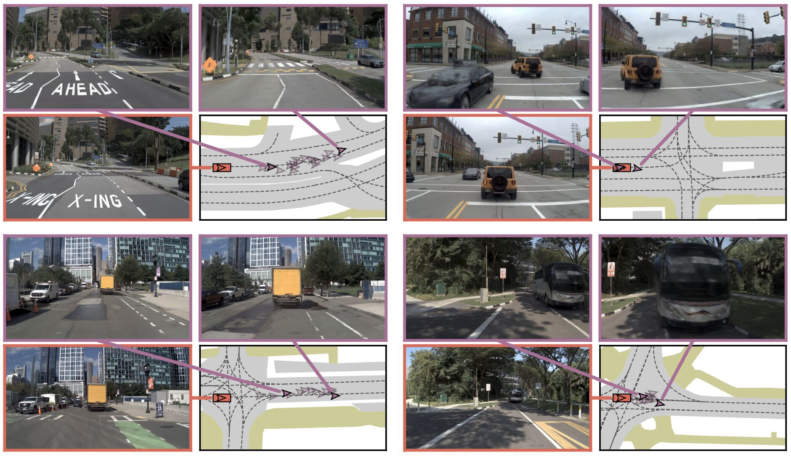
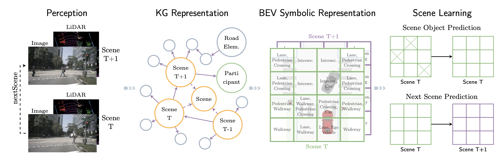

|
Wei Cao 曹 巍 I'm a PhD student at Bosch Center for Artificial Intelligence (BCAI), where I work on 3D computer vision, prediction, and planning in autonomous driving. Before joining Bosch, I completed my bachelor's and master's degrees at Technical University of Munich (TUM) over five and a half years. My bachelor's thesis was advised by Prof. Gerhard Rigoll, and my master's thesis was supervised by Jiapeng Tang and Prof. Matthias Nießner in the Visual Computing & Artificial Intelligence Group. I've spent great time at
Email (Bosch) / Email (TUM) / Scholar / Github / Twitter / LinkedIn |
 Visual Computing Group
Visual Computing Group 2012 Lab
2012 Lab BMW
BMW
Research |
|  |
Pseudo-Simulation for Autonomous Driving
Wei Cao*, Marcel Hallgarten*, Tianyu Li*, Daniel Dauner, Xunjiang Gu, Caojun Wang, Yakov Miron, Marco Aiello, Hongyang Li, Igor Gilitschenski, Boris Ivanovic, Marco Pavone, Andreas Geiger, Kashyap Chitta arXiv project page / paper / supplementary / code |
|  |
Predicting the Road Ahead: A Knowledge Graph based Foundation Model for Scene Understanding in Autonomous Driving
Hongkuan Zhou, Stefan Schimid, Yicong Li, Lavdim Halilaj, Xiangtong Yao, Wei Cao ESWC 2025 code / paper |

|
Motion2VecSets: 4D Latent Vector Set Diffusion for Non-rigid Shape Reconstruction and Tracking
Wei Cao*, Chang Luo*, Biao Zhang, Matthias Nießner, Jiapeng Tang CVPR 2024 project page / paper / code / video |

|
What Matters to Enhance Traffic Rule Compliance of Imitation Learning for Automated Driving
Hongkuan Zhou*, Wei Cao*, Aifen Sui*, Zhengshan Bing ECCV 2024 Workshop project page / paper / code |
Miscellanea |
|
Academic Activities Orgnizer of NAVSIM v2 End-to-End Driving Challenge, CVPR 2025 Program Committee of Workshop on Foundation Models for V2X-Based Cooperative Autonomous Driving, CVPR 2025Teaching Introduction to Deep Learning (IN2346), Teaching Assistant, Winter 2022 & Summer 2022, Given by Prof. Matthias Nießner (Summer) and Prof. Angela Dai (Winter) Reviewing ICRA 2025, CVPR 2025 Interests Snowboard, Running, Cycling |